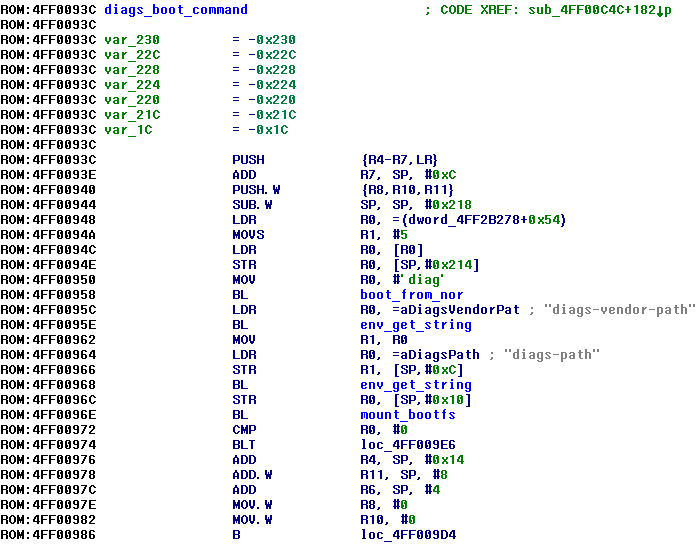
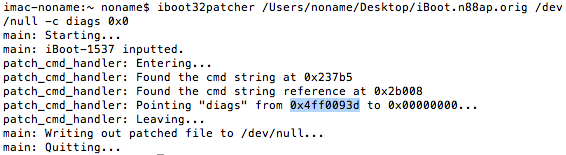
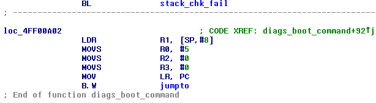
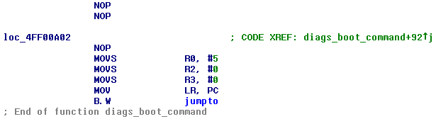
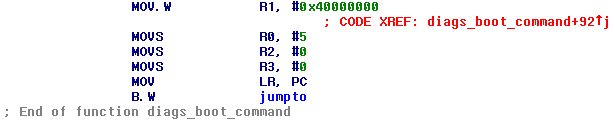
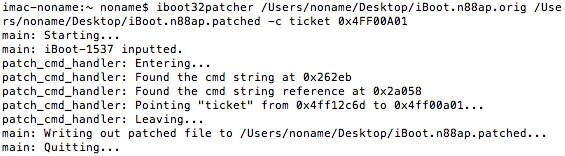
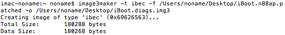
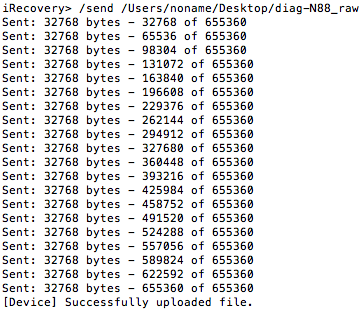
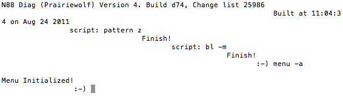

Booting diags from iBoot recovery shell
Important note: this article discusses Apple internal software. This information is provided for educational purposes only. Also playing with low-level software directly may lead to a hardware damage. You have been warneddiags (or diag) is an Apple internal diagnostic program designed to run over an iBoot. It spawns shell accessible over the serial interface with a set of powerful commands (memory manipulation, editing SysCfg, NVRAM, etc.). Also optionally special menu can be spawned right on a device's display. There's no multi-touch driver however, so an user can only use buttons for a navigation:
Diags loaded by RELEASE-fused iBoot on production n41ap pic.twitter.com/3QS1myi0oZ
— Lisa Braun (@nyan_satan) May 16, 2018
The ways to boot diags
Note: Everything in this article is about iOS 6.x bootloadersIn both RELEASE- and DEVELOPMENT-fused iBoots (only talking about flashable iBoot, not iBEC) there's a routine for booting diags:

In RELEASE bootloaders it only works as a boot-command (so it will be executed automatically if boot-command iBoot/NVRAM variable is set to diags), in DEVELOPMENT it works both as a boot-command and as a normal command accessible through the command shell
As you can see on the screenshot above, first it tries to find and boot an image of type diag in NOR (by the term "NOR" I mean a storage where boot images are situated, depending on a device it can be either the 1 MB SPI NOR chip or the special partition on NAND, which is usually referred by iBoot as "nand_firmware"). If it fails to do so, it tries to find the image on a filesystem defined by boot-partition variable on a device defined by boot-device variable using path defined by diags-path or diags-vendor-path variables (not sure what's the difference between them)
For some unobvious reason, I wasn't able to use the original routine to boot diags, so I invented a tiny patch for iBoot to see it through. This also obviates need of touching NOR or filesystem
The patch
First of all we have to locate the original diags routines. This can be easily done by using iBoot32Patcher:iboot32patcher iBoot.decrypted /dev/null -c diags 0x0
In this case it's located at 0x4FF0093D minus 0x1. The address is stored increased by one because least significant bit (LSB, bit 0) must be 1, if this code is written in Thumb (it is in our case)
Now find a function with this address and scroll to the end of it:

This code is responsible to finally boot an unpacked and validated image, it's decompilation would look in this way:
jumpto(5, 0x40000000, 0, 0)
Where 5 is a kind of mode of jumping, 5th is designed to boot diags; and 0x40000000 is a load address. Load address is a place in memory where loaded from NOR/filesystem or uploaded over USB images are storedNote that 0x40000000 is loaded from the function's stack, and this is indeed a problem since we're not going to execute the whole function. Let's fix it. NOP out the LDR and BL before it:

Then replace 2 last NOPs with MOV R1, LOADADDR. For s5l8900x-s5l8720x load address is 0x09000000, for s5l8920x-s5l8930x is 0x40000000 and for s5l8940x-s5l8955x is 0x80000000:

Now compute the difference and apply it to the original file. Now comes a tricky part, using iBoot32Patcher point ticket command to the address where your MOV R1, LOADADDR starts (0x4FF00A00 in my case) plus 0x1 (remember the LSB thing?):

Pack the patched file:
image3maker -t ibec -f iBoot.patched -o iBoot.img3
Unpack a diags image3, they're usually unencrypted:
xpwntool diag.img3 diag.raw
Now load the patched iBoot, send the image and ticket command:
After about 7-10 seconds device's display should turn purple. The shell is now ready to receive commands. Launch some program for reading/writing over UART and send menu -a command:

The menu should now appear on the display. You can also send help to get the list of all available features. Yes, an output from diags is very messy